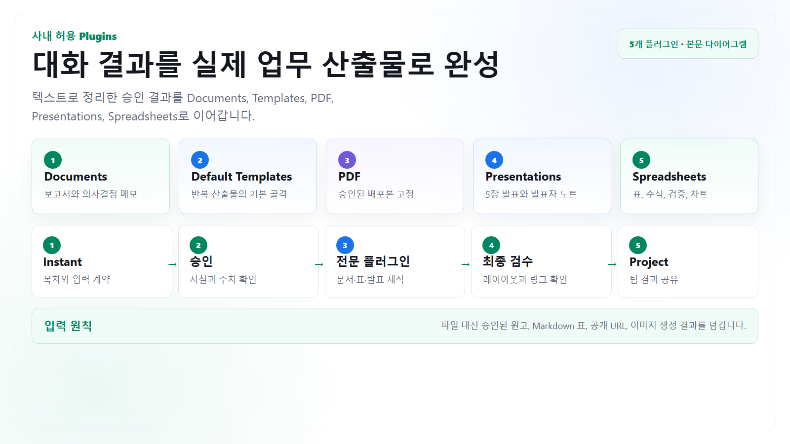

긴 글을 편집 가능한 문서로
보고서, 정책안, 회의 결과, 제안서 원고를 제목 구조와 검토 메모가 있는 문서로 만듭니다.
Plugins
이 가이드는 사내에서 Documents, Default Templates, PDF, Presentations, Spreadsheets 플러그인을 사용할 수 있다고 가정합니다. 파일을 첨부하지 않고도 텍스트 원고, Markdown 표, 공개 URL, 생성된 이미지와 승인된 결과를 다음 플러그인으로 넘겨 산출물을 만들 수 있습니다.

플러그인은 워크스페이스, 역할, 지역, 관리자 설정에 따라 보이지 않거나 실행 권한이 다를 수 있습니다. 여기서는 사용자에게 표시된 다섯 개 플러그인을 기준으로 하며, 외부 앱 연결이나 공유 권한 변경은 별도 승인을 거칩니다.
보고서, 정책안, 회의 결과, 제안서 원고를 제목 구조와 검토 메모가 있는 문서로 만듭니다.
회의록, 주간 보고, 프로젝트 계획, 의사결정 메모의 표준 구조를 먼저 고정해 누락을 줄입니다.
최종 원고의 페이지 구분, 표, 링크, 글꼴, 민감정보를 확인한 뒤 읽기 전용 배포 형식으로 만듭니다.
청중, 발표 시간, 슬라이드 수, 핵심 메시지, 시각 자료와 발표자 노트를 명확히 지정합니다.
붙여넣은 표나 CSV 텍스트를 시트 구조, 수식, 검증 열, 차트가 있는 스프레드시트로 만듭니다.
첨부 없이 입력하기
| 플러그인 | 텍스트로 줄 입력 | 반드시 보존할 것 | 완료 전 확인 |
|---|---|---|---|
| Documents | 문서 목적, 독자, 제목 구조, 승인된 본문, 출처 URL, 금지 표현 | 사실과 수치, 법무 문구, 제목 계층, 검토 메모 | 목차 연결, 중복 문장, 출처 없는 주장, 내부 정보 노출 |
| Default Templates | 산출물 종류, 필수 섹션, 팀 용어, 승인 단계, 빈칸 처리 규칙 | 회사 표준 항목과 책임자·마감·근거 필드 | 기본 템플릿을 회사 공식 양식으로 오해하지 않았는지 확인 |
| 승인된 최종 원고, 표, 캡션, 링크, 페이지 머리말·꼬리말 | 문장, 수치, 표 순서, 접근성용 제목과 대체 설명 | 페이지 잘림, 작은 글자, 깨진 링크, 복사 가능한 민감정보 | |
| Presentations | 청중, 발표 시간, 1장 1메시지, 슬라이드 순서, 이미지 프롬프트 | 핵심 수치, 출처, 의사결정 요청, 발표자 노트 | 텍스트 과밀, 이미지 글자 오류, 근거 없는 차트, 화면 비율 |
| Spreadsheets | Markdown/CSV 표, 열 정의, 계산식, 단위, 이상치 기준, 원하는 차트 | 원본 값, 수식과 상수 구분, 단위, 검증 열 | 수식 범위, 빈 셀 처리, 합계, 날짜 형식, 차트 축 |
혼합 사용 사례
아래 사례의 공통점은 Instant가 먼저 계획과 실행 프롬프트를 만들고, 크레딧 기능은 목적이 명확해진 뒤 실행하며, 플러그인은 승인된 결과를 최종 산출물로 바꾸는 데 사용한다는 점입니다.
Project에 일일 결과 축적 → Instant가 변화와 의사결정 질문 압축 → 필요할 때만 Deep Research → Documents로 1페이지 메모 → Presentations로 5장 → PDF 배포본.
Instant가 독자별 이미지 프롬프트 3안 작성 → Image Generation 1차 생성 → Instant가 글자·구도·브랜드 위험 비평 → 수정 프롬프트로 2차 생성 → Presentations에 적용.
Scheduled Task가 매일 확인 항목 알림 → 사용자가 익명화한 표를 붙여넣음 → Spreadsheets로 계산과 차트 생성 → Instant가 이상치와 반론 정리 → Project에 날짜별 결과 공유.
Scheduled Task가 공식 사이트 변화 감지 → Instant가 영향 범위와 조사 질문 작성 → Deep Research로 근거 비교 → Documents로 변경 안내 → 승인 후 PDF 배포.
Default Templates로 교육 구조 선택 → Instant가 역할별 설명과 퀴즈 작성 → Image Generation으로 절차 도식 생성 → Presentations와 Documents 제작 → PDF 배포.
Instant가 익명화한 상담 문장을 유형화 → Spreadsheets로 유형·긴급도·빈도 표 생성 → 중요한 유형만 Deep Research로 업계 대응 비교 → Documents로 개선안 작성.
| Instant가 준비할 것 | 고급 기능 실행 조건 | 플러그인 산출물 | 중단 조건 |
|---|---|---|---|
| 리서치 질문, 기간, 우선 출처, 제외 출처, 보고서 목차 | 의사결정에 외부 근거가 꼭 필요하고 기존 출처가 부족함 | Documents 보고서 또는 Presentations 요약 | 질문이 너무 넓거나 담당자가 핵심 용어에 합의하지 못함 |
| 이미지 목적, 독자, 비율, 핵심 문구, 금지 요소, 수정 기준 | 실제 발표나 안내문에 사용할 시각물이 필요함 | Presentations 슬라이드 또는 PDF 안내서 | 문구와 수치가 승인되지 않았거나 브랜드 기준이 없음 |
| 열 정의, 수식, 단위, 이상치, 검산 규칙 | 반복 계산이나 차트가 실제 의사결정에 쓰임 | Spreadsheets 워크북과 Documents 요약 | 원본 값의 의미와 단위가 불명확함 |
복사해서 쓰기
역할: 여러 ChatGPT 기능과 사내 허용 플러그인을 조합하는 업무 설계자
완성할 업무: 매주 금요일 오후 3시, B제품 출시 리스크를 임원용 5장 발표와 1페이지 PDF로 정리
공유 위치: “B제품 출시 운영” 공유 Project
사용 가능한 기능:
- Instant: 초안, 검토, 프롬프트 설계에 우선 사용
- Scheduled Tasks
- Deep Research
- Image Generation
- Documents
- Default Templates
- PDF
- Presentations
- Spreadsheets
제약:
- 파일 첨부는 사용할 수 없음
- 사용자가 붙여넣은 텍스트, Markdown 표, 공개 URL만 입력으로 사용
- 고객명, 매출, 내부 코드명은 가명 처리
- Deep Research와 Image Generation을 자동 실행하지 말 것
- 고급 기능은 사용자가 실행을 승인할 때만 사용
먼저 아래 순서로 설계해줘:
1. 업무를 Instant / 일정 / 고급 기능 / 플러그인 단계로 분해
2. 각 단계의 입력, 출력, 담당자 검토 기준, 중단 조건 표
3. Scheduled Task가 매일 만들 가벼운 결과 형식
4. Deep Research 실행이 필요한 명확한 트리거 3개
5. Image Generation이 필요한 명확한 트리거 3개
6. Documents, Presentations, PDF 사이에 넘길 승인된 텍스트 항목
7. 공유 Project에서 사용할 대화 이름과 권한 제안
그 다음 실행용 프롬프트를 각각 작성해줘:
A. 매일 리스크 모니터링 Scheduled Task 프롬프트
B. 조건 충족 시 사용할 Deep Research 프롬프트
C. 임원 보고용 16:9 이미지 생성 프롬프트
D. Documents 1페이지 의사결정 메모 프롬프트
E. Presentations 5장 발표 자료 프롬프트
F. PDF 배포본 최종 검수 프롬프트
모든 프롬프트에는 목적, 입력, 출력 형식, 검토 기준, 하지 말아야 할 일을 포함해줘.